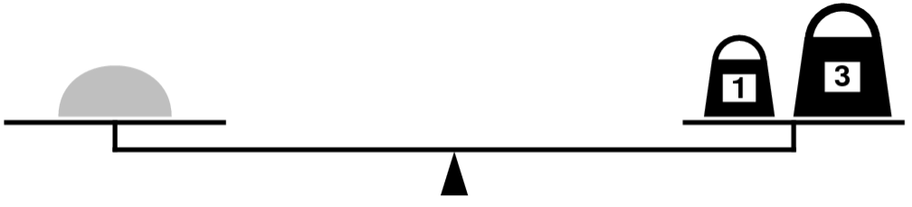
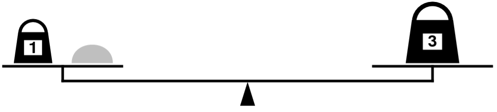
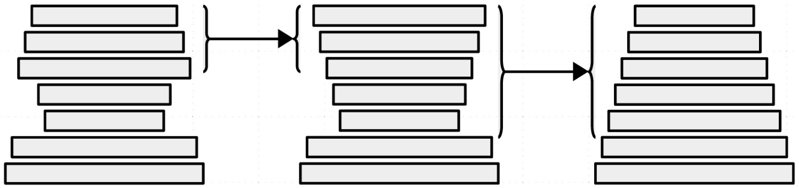

Section 3.2 Recursion and Backtracking¶
This week’s section exercises explore the ins and outs of content from weeks 4 and 5, focusing on delving more deeply into recursive backtracking and its applications, plus a bit of Big-O!
Each week, we will also be releasing a project containing starter code and testing infrastructure for that week’s section problems. When a problem name is followed by the name of a .cpp file, that means you can practice writing the code for that problem in the named file of the project. Here is the zip of the section starter code:
Recursive Backtracking¶
Win Sum, Lose Sum¶
In this problem, you’ll walk through a series of steps to build up a recursive backtracking solution to a classic problem in theoretical computer science.
You are given a Set<int> containing some integers. By adding up different groups of numbers from that Set, you can form different sums. For example, given the set {1, 2, 5, 9}, you can form these sums:
You could add up no values to get 0.
You could add 1 + 2 to get 3.
You could add 1 + 5 to get 6.
You could add up 1 by itself to get 1.
(etc.)
With the set given above, it’s not possible to pick numbers that add up to 4, but it is possible to pick numbers that add up to 5, 6, 7, 8, 9, 10, 11, and 12. You can’t make 13, but you can make 14, 15, and 16.
Write a function
Set<int> numbersMadeFrom(const Set<int>& values);
that takes as input a Set<int> of numbers, then returns a Set<int> containing all the numbers that can be made by summing up zero or more values from values.
Solution
You might recognize that this feels a lot like subsets - for each number, we can either include that number or exclude that number. All we need to do is keep track of what we come up with at each point.
/* What numbers can we make by adding elements from values, given that our
* current total is totalSoFar?
*/
Set<int> numbersMadeFromRec(const Set<int>& values, int totalSoFar) {
/* Base Case: No numbers left? We can make totalSoFar, and nothing
* else.
*/
if (values.isEmpty()) {
return { totalSoFar };
}
/* Recursive Case: Pick an element from the set. We either include it
* or exclude it. Try both options and see what we find.
*/
else {
int number = values.first();
return numbersMadeFromRec(values - number, totalSoFar) + // Exclude it
numbersMadeFromRec(values - number, totalSoFar + number); // Include it
}
}
Set<int> numbersMadeFrom(const Set<int>& values) {
return numbersMadeFromRec(values, 0);
}
Now, suppose that you’re interested not in finding every number you can make, but rather determining whether it’s possible to make a particular number called the target number. You could in principle solve this by using your solution from before - generate every number you can make, then check if your target number is in there. However, that wouldn’t be a good idea for two reasons:
The
Setreturned from this function can be enormous. For example, if you have a 30-element input set, you can have up to \(2^{30} \approx 1,000,000,000\) elements in the resulting set! If you only care about one of them, it’s wasteful to produce so many other numbers.Suppose that your recursion, early on, figures out how to make the target number. In that case, any additional work being done by the function is wasteful, since you’re generating numbers you don’t need.
To address this, we’ll need to change the function so that it doesn’t report all the numbers it finds and instead stops as soon as it finds one that works.
Using your previous function as a starting point, write a function
bool canMakeTarget(const Set<int>& values, int target);
that takes as input a Set<int> and a target number, then returns whether you can add up some collection of the numbers in value to get target.
Solution
In many ways, this function is going to work similarly to the previous one. We’ll keep track of what we’ve added up so far, and at each point will either include or exclude the next item from the set. Unlike last time, though, the way in which we’ll combine values together will not be by adding them, and we’ll need another base case to account for the possibiltiy that we’ve already hit our total. Here’s what that looks like:
/* Can we make the value target with the numbers remaining from values,
* given that our current sum is target?
*/
bool canMakeTargetRec(const Set<int>& values, int target, int totalSoFar) {
/* Base Case 1: If we hit the target, we're done! */
if (totalSoFar == target) {
return true;
}
/* Base Case 2: Otherwise, if there are no numbers left in the set, we
* know that we can't make the target given the decisions we have
* committed to so far.
*/
else if (values.isEmpty()) {
return false;
}
/* Recursive Case: Pick an element from the set. We either include it
* or exclude it. Try both options and see what we find.
*/
else {
int number = values.first();
/* We use the OR (||) operator here, since if either option leads to
* our total then we can make it, and if neither option leads to our
* total we know we can't make the total given the decisions we've
* committed to at this point.
*/
return canMakeTargetRec(values - number, target, totalSoFar) || // Exclude it
canMakeTargetRec(values - number, target, totalSoFar + number); // Include it
}
}
bool canMakeTarget(const Set<int>& values, int target) {
return canMakeTargetRec(values, target, 0);
}
As a note, you can combine the two parameters target and totalSoFar together in canMakeTarget. Instead of adding values to totalSoFar, subtract them from target, and stop once target is zero.
You now have a function that will tell you whether it’s possible to sum numbers up to reach a target. However, when the function finishes running, all you’ll have is the bool saying “yes, it’s possible” or “no, it isn’t.” But what if it is possible, and you’d like to know one way to get the values to add up to the target?
Modify your
canMakeTargetfunction so that it has this signature:
bool canMakeTarget(const Set<int>& values, int target, Set<int>& solution);
Your function should, as before, take in values and target and see whether it’s possible to find numbers in values that sum up to target. If not, your function should return false. But if it is possible, your function should return true and then modify solution so hold one subset of values that adds up to target.
Solution
There are several different ways to do this.
This first approach works by replacing the integer totalSoFar with a Set<int> consisting of the choices that we have made up to this point. If we find that it adds up to exactly target, great! We can overwrite solution with that as our answer.
/* Helper function to add up the integers in a set. */
int sumOf(const Set<int>& values) {
int result = 0;
for (int value: values) {
result += value;
}
return result;
}
/* Can we make the value target with the numbers remaining from values,
* given that our current sum is target?
*/
bool canMakeTargetRec(const Set<int>& values, int target,
const Set<int>& soFar,
Set<int>& solution) {
/* Base Case 1: If we hit the target, we're done! */
if (sumOf(soFar) == target) {
solution = soFar; // Write down the solution
return true;
}
/* Base Case 2: Otherwise, if there are no numbers left in the set, we
* know that we can't make the target given the decisions we have
* committed to so far.
*/
else if (values.isEmpty()) {
return false;
}
/* Recursive Case: Pick an element from the set. We either include it
* or exclude it. Try both options and see what we find.
*/
else {
int number = values.first();
/* We use the OR (||) operator here, since if either option leads to
* our total then we can make it, and if neither option leads to our
* total we know we can't make the total given the decisions we've
* committed to at this point.
*/
return canMakeTargetRec(values - number, target, soFar, solution) || // Exclude it
canMakeTargetRec(values - number, target, soFar + number, solution); // Include it
}
}
bool canMakeTarget(const Set<int>& values, int target, Set<int>& solution) {
return canMakeTargetRec(values, target, {}, solution);
}
Another option is to not pass down a set like that and to instead use our old approach of having the sum of the numbers we’ve seen so far. Then, as the recursion unwinds when we find a successful option, we can add in the number if we used it. Here’s what this might look like:
/* Can we make the value target with the numbers remaining from values,
* given that our current sum is target?
*/
bool canMakeTargetRec(const Set<int>& values, int target, int totalSoFar,
Set<int>& solution) {
/* Base Case 1: If we hit the target, we're done! */
if (totalSoFar == target) {
/* Clear out whatever happened to be in solution up to this point. */
solution = {};
return true;
}
/* Base Case 2: Otherwise, if there are no numbers left in the set, we
* know that we can't make the target given the decisions we have
* committed to so far.
*/
else if (values.isEmpty()) {
return false;
}
/* Recursive Case: Pick an element from the set. We either include it
* or exclude it. Try both options and see what we find.
*/
else {
int number = values.first();
/* First, see what happens if we exclude the number. */
if (canMakeTargetRec(values - number, target, totalSoFar, solution)) {
/* Great, a solution exists! We haven't included anything here, so
* whatever that solution is doesn't need number in it.
*/
return true;
}
/* Now try including the number. */
if (canMakeTargetRec(values - number, target, totalSoFar + number, solution)) {
/* A solution exists assuming we add in number. So let's add number
* into the solution that was found.
*/
solution += number;
return true;
}
/* Oh fiddlesticks, neither works. */
return false;
}
}
bool canMakeTarget(const Set<int>& values, int target, Set<int>& solution) {
return canMakeTargetRec(values, target, 0, solution);
}
Weights and Balances¶
Thanks to Eric Roberts for this problem
Topics: Recursion, Combinations, Backtracking
I am the only child of parents who weighed, measured, and priced everything; for whom what could not be weighed, measured, and priced had no existence.
—Charles Dickens, Little Dorrit, 1857
In Dickens’s time, merchants measured many commodities using weights and a two-pan balance – a practice that continues in many parts of the world today. If you are using a limited set of weights, however, you can only measure certain quantities accurately.
For example, suppose that you have only two weights: a 1-ounce weight and a 3-ounce weight. With these you can easily measure out 4 ounces, as shown:

It’s more interesting to discover that you can also measure out 2 ounces by shifting the 1-ounce weight to the other side, as follows:

Write a recursive function,
bool isMeasurable(int target, const Vector<int>& weights);
that determines whether it is possible to measure out the desired target amount with a given set of weights, which is stored in the vector weights.
As an example, the function call
isMeasurable(2, { 1, 3 })
should return true because it is possible to measure out two ounces using the sample weight set as illustrated in the preceding diagram. On the other hand, calling
isMeasurable(5, { 1, 3 })
should return false because it is impossible to use the 1- and 3-ounce weights to add up to 5 ounces. However, the call
isMeasurable(6, { 1, 3, 7 })
should return true: you can measure the six-ounce weight by placing it and the one-ounce weight on one side of the scale and the seven-ounce weight on the other.
Here’s a function question to ponder: let’s say that you get to choose n weights. Which ones would you pick to give yourself the best range of weights that you’d be capable of measuring?
Solution
Imagine that we start off by putting the amount to be measured (call it n) on the left side of the balance. This makes the imbalance on the scale equal to n. Imagine that there is some way to measure n. If we put the weights on the scale one at a time, we can look at where we put that first weight (let’s suppose it weighs w). It must either:
go on the left side, making the net imbalance on the scale n + w, or
go on the right side, making the net imbalance on the scale n – w, or
not get used at all, leaving the net imbalance n.
If it is indeed truly possible to measure n, then one of these three options has to be the way to do it, even if we don’t know which one it is. The question we then have to ask is whether it’s then possible to measure the new net imbalance using the weights that remain – which we can determine recursively! On the other hand, if it’s not possible to measure n, then no matter which option we choose, we’ll find that there’s no way to use the remaining weights to make everything balanced!
If we’re proceeding recursively, which we are here, we need to think about our base case. There are many options we can choose from. One simple one is the following: imagine that we don’t have any weights at all, that we’re asked to see whether some weight is measurable using no weights. In what circumstances can we do that? Well, if what we’re weighing has a nonzero weight, we can’t possibly measure it – placing it on the scale will tip it to some side, but that doesn’t tell us how much it weighs. On the other hand, if what we’re weighing is completely weightless, then putting it on the scale won’t cause it to tip, convincing us that, indeed, it is weightless! So as our base case, we’ll say that when we’re down to no remaining weights, we can measure n precisely if n = 0. With that in mind, here’s our code:
/**
* Given an amount, a list of weights, and an index, determines whether it's
* possible to measure n using the weights at or after the index given by
* startPoint.
*
* @param amount The amount to measure, which can be positive, negative or 0.
* @param weights The weights available to us.
* @param index The starting index into the weights Vector.
* @return Whether the amount can be measured using the weights from the specified
* index and forward.
*/
bool isMeasurableRec(int amount, const Vector<int>& weights, int index) {
if (index == weights.size()) {
return amount == 0;
} else {
return isMeasurableRec(amount, weights, index + 1) ||
isMeasurableRec(amount + weights[index], weights, index + 1) ||
isMeasurableRec(amount - weights[index], weights, index + 1);
}
}
bool isMeasurable(int amount, const Vector<int>& weights) {
return isMeasurableRec(amount, weights, 0);
}
Tug-of-War¶
You are trying to organize a tug-of-war event for a group of people. For each person, you have an int representing the amount of force they can pull with. You’d like to break the group into two teams with exactly equal pulling strength.
Write a function
bool canSplitEvently(const Vector<int>& strengths);
that takes as input a Vector<int> holding all the pulling strengths of the people in the group, then returns whether there is some way to split the group into two teams of exactly equal pulling strength.
Solution
The main insight here is that each person either goes onto the first team or the second team. So, for each person, we recursively explore what happens if we try putting them on the first team, then on the second, and see if either option works.
Here’s one way to do this.
/* Given the existing strengths of the two teams, can the people from index
* nextIndex and onward be split across the two teams to balance out the
* strengths?
*/
bool canSplitRec(const Vector<int>& strengths,
int teamAStrength, int teamBStrength,
int nextIndex) {
/* Base Case: If everyone is assigned, see if the teams have the same
* strength.
*/
if (nextIndex == strengths.size()) {
return teamAStrength == teamBStrength;
}
/* Recursive Case: See what happens if we assign the next person to Team
* A and to Team B. If either option works, there's a split. If neither
* option works, we need to back up and try something else.
*/
else {
return canSplitRec(strengths,
teamAStrength + strengths[nextIndex],
teamBStrength,
nextIndex + 1) ||
canSplitRec(strengths,
teamAStrength,
teamBStrength + strengths[nextIndex],
nextIndex + 1);
}
}
bool canSplitEvenly(const Vector<int>& strengths) {
/* Nice little optimization here: because the roles of the two teams are
* interchangeable, we can place the first person onto Team A. Otherwise,
* we'd consider each split twice, once with the teams labeled Team A
* and Team B, and once with the teams labeled Team B and Team A.
*/
if (strengths.isEmpty()) {
return true;
}
return canSplitRec(strengths, strengths[0], 0, 1);
}
Bonus points if you noticed that this is basically the same as the Weights and Measures problem from last week, except that you’re specifically trying to make a value equal to half the sum of the input strengths.
All Squared Away¶
Here’s a little number puzzle: can you arrange the numbers 1, 2, 3, …, and 15 in a sequence such that the sum of any two adjacent numbers is a perfect square? (A perfect square is a number that’s the square of an integer. So, for example, 16 = 42 is a perfect square, and 1 = 12 is a perfect square, but 19 isn’t a perfect square). There is indeed a way to do this, which is shown here:
8, 1, 15, 10, 6, 3, 13, 12, 4, 5, 11, 14, 2, 7, 9
However, you can’t do this with the numbers 1, 2, 3, …, 18, and you can’t do this with the numbers 1, 2, 3, …, 19, but you can do this with the numbers 1, 2, 3, …, 23.
Implement a function
Optional<Vector<int>> findSquareSequence(int n);
that takes as input a number n, then returns an arrangement of the numbers 1, 2, 3, …, n such that each number appears exactly once and the sum of any two adjacent numbers is a perfect square. If there isn’t a way to do this, this function returns Nothing. (If \(n\) is negative, your function should call error to report an error.)
For convenience, we have provided you with a function
bool isPerfectSquare(int value);
that takes as input an integer and returns whether that integer is a perfect square.
Solution
The main observations we need to solve this problem are the following. First, since this problem talks about finding a way of rearranging things in a sequence, we’re going to approach this as a permutations-type problem. At each point, we’ll ask the question “which of the remaining numbers should come next?” Second, since we’re asking the question “is it possible to do this?” (or, equivalently, “are there any ways to do this?”), we can frame this as a backtracking problem. We’ll try out each option and, if any option works, immediately stop and report that we’ve found a solution.
Simply trying out all possible permutations won’t be fast enough here. For example, with \(n = 35\), there are \(35! = 10,333,147,966,386,144,929,666,651,337,523,200,000,000\) possible ways of ordering the numbers \(1, 2, …, 35\). However, most of those orderings are “silly.” For example, no sequence starting with \(1, 2\) could possibly work, since \(1 + 2\) isn’t a perfect square. Restricting ourselves by only appending numbers to the sequence that form a perfect square when added into the previous total dramatically cuts down the number of options that we need to try, and makes it surprisingly quick to find a solution for \(1, 2, …, 35\).
Below are two different solutions to this problem. The first of these is based on the idea that to see whether we can extend the sequence, we only need to know what the last number in the partially-built sequence is. When we start, though, there is no previous number in the sequence. But not to worry - we can use an Optional<int> parameter to handle this. It’ll either hold Nothing if we’re figuring out what the first term in the sequence is, or it’ll hold the last term if there is one.
/* Can we use the remaining numbers to build up a sequence, given what the last
* number used in the sequence was?
*/
Optional<Vector<int>> findSequenceRec(const Set<int>& unused,
Optional<int> last) {
/* Base Case: If all numbers are used, we have our sequence! */
if (unused.isEmpty()) {
return { }; // Empty sequence works
}
/* Recursive Case: Some number comes next. Try each of them and see which
* one we should pick.
*/
for (int next: unused) {
/* We can use this if either
*
* 1. there is no previous number (we're the first), or
* 2. we add with the previous number to a perfect square.
*
* We rely on short-circuit evaluation below. If last is Nothing,
* we don't evaluate the isPerfectSquare bit.
*/
if (last == Nothing || isPerfectSquare(next + last.value())) {
/* See what happens if we extend with this number. */
auto result = findSequenceRec(unused - next, next);
if (result != Nothing) {
/* result currently holds a square sequence using all the
* remaining numbers. We need to put our number at the front
* of the sequence.
*/
result.value().insert(0, next);
return result;
}
}
}
/* Tried all options and none of them worked. Oh well! */
return Nothing;
}
Optional<Vector<int>> findSquareSequence(int n) {
/* Validate input. */
if (n < 0) {
error("Don't be so negative!");
}
/* Build a set of the numbers 1, 2, 3, ..., n. */
Set<int> options;
for (int i = 1; i <= n; i++) {
options += i;
}
return findSequenceRec(options, Nothing);
}
We can also just use our traditional soFar parameter approach, which looks like this:
Optional<Vector<int>> findSequenceRec(const Set<int>& unused,
const Vector<int>& soFar);
Optional<Vector<int>> findSquareSequence(int n) {
/* Validate input. */
if (n < 0) {
error("Don't be so negative!");
}
/* Build a set of the numbers 1, 2, 3, ..., n. */
Set<int> options;
for (int i = 1; i <= n; i++) {
options += i;
}
return findSequenceRec(options, { });
}
Optional<Vector<int>> findSequenceRec(const Set<int>& unused,
const Vector<int>& soFar) {
/* Base Case: If all numbers are used, we have our sequence! */
if (unused.isEmpty()) {
return soFar;
}
/* Recursive Case: Some number comes next. Try each of them and see which
* one we should pick.
*/
for (int next: unused) {
/* We can use this if either
*
* 1. the sequence is empty, so we're first in line, or
* 2. the sequence is not empty, but we sum to a perfect square
* with the previous term.
*/
if (soFar.isEmpty() ||
isPerfectSquare(next + soFar[soFar.size() - 1])) {
/* See what happens if we extend with this number. */
auto result = findSequenceRec(unused - next, soFar + next);
if (result != Nothing) {
return result;
}
}
}
/* Tried all options and none of them worked. Oh well! */
return Nothing;
}
Mmmmm… Pancakes!¶
Bill Gates is famous for a number of things – for his work at Microsoft, for his wide-scale philanthropy through the Bill and Melinda Gates Foundation, and, oddly enough, for a paper he co-authored about flip-ping pancakes.
Imagine you have a stack of pancakes of different diameters. In an ideal pancake stack, the kind of pancake stack you’d see someone photograph and put on Instagram, the pancakes would be stacked in decreasing order of size from bottom to top. That way, all the delicious syrup and melted butter you put on top of the pancakes can drip down onto the rest of the stack. Otherwise, you’ll have a bigger pancake on top of a smaller one, serving as an edible umbrella that shields the lower pancakes from all the deliciousness you’re trying to spread onto them.
The problem with trying to get a stack of pancakes in sorted order is that it’s really, really hard to pull a single pancake out of a stack and move it somewhere else in the stack. On the other hand, it’s actually not that difficult to slip a spatula under one of the pancakes, pick up that pancake and all the pancakes above it, then flip that part of the stack over. For example, in the illustration below, we can flip the top three pancakes in the stack over, then flip the top five pancakes of the resulting stack over:

Three stacks of pancakes. The first stack has the largest pancakes on the bottom, the smallest pancakes in the middle, and the rest of the pancakes on the top with the largest of the medium sized pancakes at the bottom of the top group of pancakes and the smallest of the medium sized pancakes at the very top of the stack. The middle stack of pancakes shows what happens after flipping the medium sized pancakes upside down. The bottom two pancakes are still the largest, and now the rest of the stack increasingly gets larger as you go up. The last stack is perfectly ordered with the largest pancake on the bottom, and the smallest pancake on top.¶
Your task is to write a function
Optional<Vector<int>> sortStack(Stack<double> pancakes, int numFlips);
that accepts as input a Stack<double> representing the stack of pancakes (with each pancake represented by its width in cm) and a number of flips, then returns a sequence of at most numFlips flips needed to sort the stack. Each flip is specified as how many pancakes off the top of the stack you flipped. For example, the above illustration would correspond to the flip sequence {3, 5}, since we first flipped the top three pancakes, then the top five pancakes. If there is no way to sort the stack with numFlips or fewer flips, you should return Nothing.
Here are some notes on this problem:
Treat this as a backtracking problem – try all possible series of flips you can make and see whether you can find one that gets everything into sorted order. As a result, don’t worry about efficiency.
Your solution must be recursive.
You can assume the pancakes all have different widths and that those widths are positive.
The
Stackhere is ordered the way the pancakes are – the topmost pancake is at the top of the stack, and the bottommost pancake is at the bottom.
Solution
The key idea behind this problem is to follow the hint suggested and to try all possible flips at each point in time. If we ever get the stack sorted, great! We’re done. If we’re out of moves, then we report failure.
/* Given a stack of pancakes, returns whether it's sorted. */
bool isSorted(Stack<double> pancakes) {
double last = -1; // No pancakes have negative size;
while (!pancakes.isEmpty()) {
/* Check the next pancake. */
double next = pancakes.pop();
if (next < last) {
return false;
}
last = next;
}
/* Pancakes are in increasing order! */
return true;
}
/* Given a stack of pancakes and a flip size, flips that many pancakes
* on the top of the stack.
*/
Stack<double> flip(Stack<double> pancakes, int numToFlip) {
/* Take the top pancakes off the stack and run them into a queue.
* This preserves the order in which they were removed.
*/
Queue<double> buffer;
for (int i = 0; i < numToFlip; i++) {
buffer.enqueue(pancakes.pop());
}
/* Move the pancakes back. */
while (!buffer.isEmpty()) {
pancakes.push(buffer.dequeue());
}
return pancakes;
}
Optional<Vector<int>> sortStack(Stack<double> pancakes, int numFlips) {
/* Base Case: If the stack is sorted, great! We're done, and no flips
* were needed.
*/
if (isSorted(pancakes)) {
return { }; // No flips
}
/* Base Case: If the stack isn't sorted and we're out of flips, then
* there is no way to sort things.
*/
else if (numFlips == 0) {
return Nothing;
}
/* Recursive Case: The stack isn't sorted and we still have flips left.
* The next flip could flip 1, 2, 3, ..., or all N of the pancakes.
* Try each option and see whether any of them work.
*/
for (int numToFlip = 1; numToFlip <= pancakes.size(); numToFlip++) {
/* Make the flip and see if it works. */
auto result = sortStack(flip(pancakes, numToFlip), numFlips - 1);
if (result != Nothing) {
/* The result holds all the remaining flips but doesn't know about
* the flip we just did. Insert that flip at the beginning.
*/
result.value().insert(0, numToFlip);
return result;
}
}
/* If we're here, then no matter which flip we make first, we cannot
* get the pancakes sorted. Give up.
*/
return Nothing;
}